Ví gọn + hai sản phẩm

Giữ hai lợi ích tài chính. Rail bắt đầu y484, trải nghiệm y652 (gồm tiêu đề).
Lý do: Không thay cấu trúc đã chọn.
Xem layout ↗Dùng lại block thật từ code cũ; không lấy V5 làm nền. Bản này chỉ rõ từng block lấy ở đâu, kích thước bao nhiêu, giữ gì, sửa gì và tính năng B3 nằm ở màn nào.
Chỉ sửa có mục đích: làm rõ nhãn sản phẩm, sửa vùng chạm story, mở đúng ưu đãi, ẩn nút Tết khi cuộn để không che CTA, đặt quản lý đã lưu ở tầng sâu, nối trải nghiệm tới yêu cầu. Không đưa đơn vé lên thay ưu đãi và không thay cặp tài chính bằng shortcut.
Giữ hai lợi ích tài chính. Rail bắt đầu y484, trải nghiệm y652 (gồm tiêu đề).
Lý do: Không thay cấu trúc đã chọn.
Xem layout ↗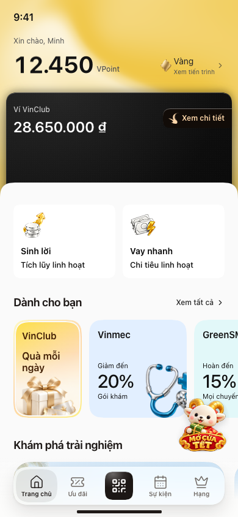
Tăng container237px, đẩy các section sau xuống38px; rail y522.
Lý do: Thêm diện tích cho thông tin tĩnh mà không có thêm tác vụ.
Xem layout ↗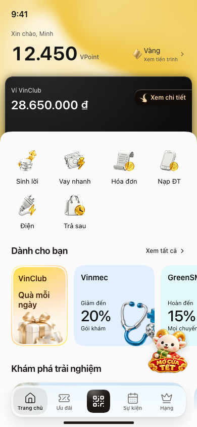
Khối dịch vụ cao180px; rail y524, đẩy trải nghiệm xuống40px.
Lý do: Trộn tiện ích với cặp sản phẩm tài chính; cạnh tranh với rail ưu đãi.
Xem layout ↗Sơ đồ dùng geometry CSSpx mới đo ở viewport390×844. Đường đỏ là hết viewport; dock nổi cố định. Bản vẽ là tài liệu giải thích, không được dùng làm nền ảnh giả UI.
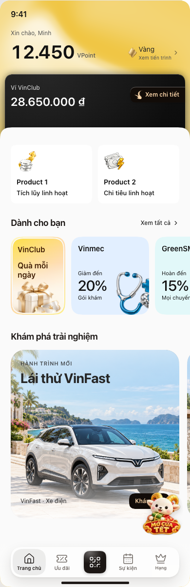
Ảnh trải nội dung để xem toàn bộ thứ tự; không phải viewport điện thoại cao1200px.
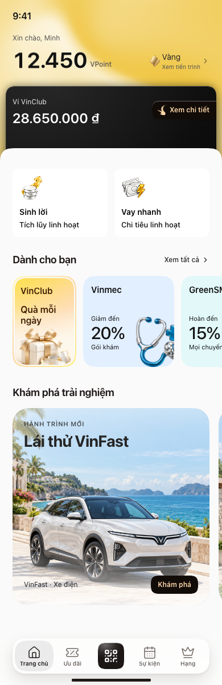
Renderer thật: StackHome + CSS / tài sản gốc, không raster hóa text. Khác có chủ đích ở nhãn và hành vi tầng sâu.
Hội viên, ví, hai sản phẩm, rail và ảnh lớn được compose qua StackHome. Các helper nội bộ vẫn dùng qua component này; không tạo lại Button, Card, ItemList hay typography system.
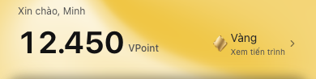
BLOCK TRONG BẢN CHỌN
Nhận biết tôi là ai, có gì; mở tiến trình hạng.
Clone / dùng lại từ: StackHome → header/tag + AnimatedNumber
app/(vinclub)/vinclub-home/ref-layouts.tsx · ref-layouts.tsx:387; ref-layouts.tsx:393; ref-layouts.tsx:395; hierarchy.css:69; hierarchy.css:75Giữ: Giữ vị trí, shader, layout và ảnh hạng gốc; tên/số điểm là fixture.
ĐÍCH VPOINT RIÊNG Chạm VPoint mở quản lý điểm; chạm hạng mở Hội viên. Không thêm một hero hội viên mới.
Bấm vào đâu?Không chọn cách khác vì: Tăng chiều cao trạng thái tĩnh, đẩy sản phẩm và ưu đãi xuống. Đây là lý do đề xuất của nhóm, không gán thành quyết định bác bỏ trước đây của bạn.
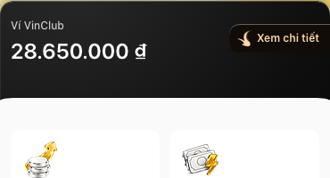
BLOCK TRONG BẢN CHỌN
Đọc số dư, vào ví hoặc kích hoạt.
Clone / dùng lại từ: StackHome → Pouch + WalletInside + WalletActivation
app/(vinclub)/vinclub-home/ref-layouts.tsx · ref-layouts.tsx:299; ref-layouts.tsx:307; ref-layouts.tsx:339; ref-layouts.tsx:399; ref-layouts.css:358; ref-layouts.css:812Giữ: Giữ carbon material, snap, số dư, animation và iframe gốc.
Bấm vào đâu?Không chọn cách khác vì: Mất nhận diện vật thể và flow vào ví đã có nguồn. Đây là lý do đề xuất của nhóm, không gán thành quyết định bác bỏ trước đây của bạn.
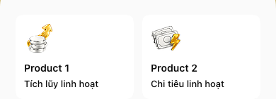
BLOCK TRONG BẢN CHỌN
Phân biệt lợi ích tích lũy và hạn mức chi tiêu; mở chi tiết riêng.
Clone / dùng lại từ: VoucherLower → ProductCases(count=2)
app/(vinclub)/vinclub-home/ref-layouts.tsx · ref-layouts.tsx:228; ref-layouts.tsx:233; ref-layouts.tsx:236; ref-layouts.css:393; ref-layouts.css:804; ref-layouts.css:834Giữ: Adaptation nội dung nhỏ: đổi Product1/2 thành tên tài chính; giữ hai card, icon và ngôn ngữ lợi ích.
CHỈ ĐỔI NHÃN VÀ NỐI ĐÍCH Product1/2 → Sinh lời/Vay nhanh; giữ hai lợi ích Tích lũy linh hoạt/Chi tiêu linh hoạt. Không thay thành shortcut.
Bấm vào đâu?Không chọn cách khác vì: Đổi phạm vi sản phẩm tài chính thành thao tác ví, sai vai trò nguồn và brief. Đây là lý do đề xuất của nhóm, không gán thành quyết định bác bỏ trước đây của bạn.
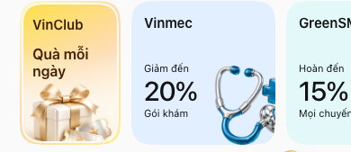
BLOCK TRONG BẢN CHỌN
Đặt ngữ cảnh cho một rail chung gồm story và ưu đãi thương hiệu.
Clone / dùng lại từ: VoucherLower
app/(vinclub)/vinclub-home/ref-layouts.tsx · ref-layouts.tsx:288; ref-layouts.tsx:291; ref-layouts.css:931Giữ: Giữ title và đường xem đủ; không nói thuật toán đã cá nhân hóa.
Bấm vào đâu?Không chọn cách khác vì: Tăng nhấn game và đẩy cặp tài chính khỏi nhịp nguồn. Đây là lý do đề xuất của nhóm, không gán thành quyết định bác bỏ trước đây của bạn.
Entry nhỏ tạo khám phá; viewer chứa nội dung sâu.
Clone / dùng lại từ: HomeStory(children=GiftDeck)
app/(vinclub)/vinclub-home/home-story.tsx · home-story.tsx:11; home-story.tsx:36; home-story.tsx:43; home-story.tsx:48; ref-layouts.tsx:273; ref-layouts.css:910; ref-layouts.css:954Giữ: Giữ artwork và viewer; bắt buộc sửa hit area/stacking nếu còn bị offer cạnh chặn pointer.
Bấm vào đâu?Không chọn cách khác vì: Chiếm màn trước khi khách có ý định; ngân sách/thưởng chưa được xác thực. Đây là lý do đề xuất của nhóm, không gán thành quyết định bác bỏ trước đây của bạn.
Thấy thương hiệu + lợi ích + điều kiện; chọn một đề nghị.
Clone / dùng lại từ: OfferCards + VOUCHERS
app/(vinclub)/vinclub-home/ref-layouts.tsx · ref-layouts.tsx:29; ref-layouts.tsx:271; ref-layouts.tsx:274; ref-layouts.tsx:283; ref-layouts.css:658; ref-layouts.css:713; hierarchy.css:85; hierarchy.css:87Giữ: Giữ toàn bộ 6 thương hiệu; không biến đề nghị thành voucher đã sở hữu.
CHI TIẾT ĐÚNG THƯƠNG HIỆU Giữ rail mức hưởng; Của tôi nằm trong Ưu đãi, không đưa vé giá bán lên chiếm vị trí lời đề nghị.
Bấm vào đâu?Không chọn cách khác vì: Cho so sánh tốt hơn nhưng đẩy trải nghiệm quá sâu; archive như lựa chọn kiểm chứng, chưa là user rejection. Đây là lý do đề xuất của nhóm, không gán thành quyết định bác bỏ trước đây của bạn.
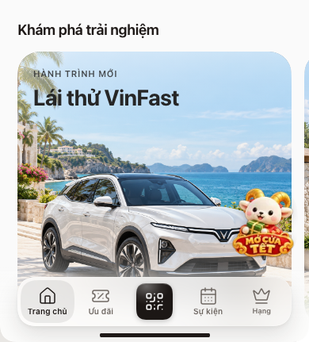
BLOCK TRONG BẢN CHỌN
Ảnh lớn giúp hình dung trước khi xem điều kiện.
Clone / dùng lại từ: ForYou(layout=2)
app/(vinclub)/vinclub-home/ref-layouts.tsx · ref-layouts.tsx:120; ref-layouts.tsx:124; ref-layouts.tsx:140; ref-layouts.tsx:147; ref-layouts.css:593; ref-layouts.css:595; ref-layouts.css:837Giữ: Giữ tỷ lệ lớn, ảnh, overlay và smooth corners nguồn.
Bấm vào đâu?Không chọn cách khác vì: Dễ thấy nhiều item nhưng mất vai trò hình dung và thu hẹp vùng đọc chữ/CTA. Đây là lý do đề xuất của nhóm, không gán thành quyết định bác bỏ trước đây của bạn.
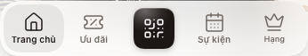
BLOCK TRONG BẢN CHỌN
Giữ đường tìm lại và chuyển hub ổn định.
Clone / dùng lại từ: VinClubHome page → nav.vk-bar + vk-indicator
app/(vinclub)/vinclub-home/page.tsx · page.tsx:140; page.tsx:146; page.tsx:152; vinclub-home.css:62Giữ: Reuse nav nguồn; kiểm tra QR trước khi công bố flow.
Bấm vào đâu?Không chọn cách khác vì: Home có nhiều mục tiêu, không có một cam kết duy nhất. Đây là lý do đề xuất của nhóm, không gán thành quyết định bác bỏ trước đây của bạn.
PHẦN BỔ SUNG / MỞ RỘNG Hai cột tương lai mô tả scope kế hoạch và điều kiện; UI demo không phải chứng cứ API đã bàn giao.
| Tính năng | Điểm vào trên Home | Màn phía sau | Hiện tại | 02/2027 | Cuối 2027 | Giá trị kinh doanh |
|---|---|---|---|---|---|---|
| Hạng, quyền lợi, số dư và lịch sử VPoint | Lớp 1: hạng + VPoint | Hội viên → Điểm / Quyền lợi / Tiến độ hạng | Có bề mặt nguồn; B3 ghi hoàn thành hồ sơ hạng và sổ cái, chưa kiểm chứng production | B3 30/11/2026: lịch sử/hạn điểm, tiến độ hạng; 24/12: cấp quyền lợi và đối soát | Mở rộng quyền lợi theo nguồn cung; không tự thêm tab | Thúc đẩy sử dụng và chi tiêu chéo; VPoint không phải tiền ví hay doanh thu |
| Ví VinPay, liên kết ngân hàng, nạp/rút và lịch sử | Lớp 2: ví độc lập với VPoint | Ví VinPay → nguồn tiền / giao dịch | Có ví và đường kích hoạt trong nguồn; B3 ghi hoàn thành liên kết ngân hàng ở ví, không đồng nghĩa SDK trên VinClub đã xong | SDK trên VinClub hạn 24/12/2026 | Mở rộng kết nối theo nghiệm thu, giữ lớp ví | Nguồn tiền cho giao dịch; tiền nạp và số dư không phải doanh thu |
| Sinh lời | Lớp 3: thẻ tài chính Sinh lời | VinPay → chi tiết sản phẩm → điều kiện → đăng ký | Source có saving; lợi suất 5,7%/năm là số mẫu. B3 ghi hoàn thành kích hoạt Sinh lời ở ví | Giữ thẻ và chuyển đúng sản phẩm khi VinPay hỗ trợ; không cam kết lãi suất hay tích hợp VinClub đã giao | Tối ưu bán chéo theo dữ liệu đủ điều kiện; không tăng số thẻ mặc định | Bán chéo sản phẩm tài chính cho VinPay; cơ chế thu và bên hưởng cần hợp đồng |
| Vay nhanh / quyền lợi tín dụng | Lớp 3: thẻ tài chính Vay nhanh | VinPay → chi tiết tín dụng → kiểm tra điều kiện / đăng ký | Source có vay với hạn mức 50 triệu mẫu; B3 hiện hành không chốt ngày phát hành tín dụng | Giữ vai trò thẻ tài chính; chỉ cho đăng ký thật khi sản phẩm và đối tác đã sẵn sàng; không hứa duyệt | Mở theo sản phẩm được chốt, chưa có hạn cam kết trong B3 | Bán chéo tín dụng; phí giới thiệu/chia sẻ doanh thu chưa xác nhận |
| QR, hóa đơn, tiện ích, QR xuyên biên giới | Lớp 2: Mở ví; lớp 6: QR | Ví → Thanh toán / Hóa đơn; QR → quét và xác nhận | Điểm vào ví/QR có nguồn; readiness mỗi dịch vụ chưa kiểm chứng | QR + hóa đơn 31/12/2026; QR xuyên biên giới 28/02/2027 | Mở rộng mạng chấp nhận có kiểm soát; không tạo khối tiện ích mới trên Home | Phí thanh toán chỉ theo hợp đồng xác nhận; TPV không phải doanh thu |
| Dùng VPoint khấu trừ tiền đơn | Lớp 1: Điểm; lớp 4/5: món hoặc dịch vụ áp dụng | Chi tiết quyền lợi → đơn hàng → thanh toán | B3 ghi Tiêu VPoint hoàn thành; cơ chế khấu trừ tích hợp đang có hạn riêng | Khấu trừ tại checkout hạn 28/02/2027; hiển thị điểm dùng được và số tiền còn lại | Mở rộng từng đơn vị đủ đối soát, không gộp tiền ví với điểm | Tăng sử dụng quyền lợi và giao dịch; trừ điểm không tự là doanh thu |
| Voucher, quà đã sở hữu và quà sinh nhật | Lớp 4: rail ưu đãi thương hiệu + quà | Ưu đãi → Voucher của tôi / đổi quà / nơi sử dụng | Nguồn có rail và quà; B3 ghi ví voucher hoàn thành; quà hằng ngày vẫn là demo | Đổi quà 30/11; quà sinh nhật hội viên cao cấp 31/12/2026; quà chào mừng 24/12 | Duy trì theo ngân sách và nguồn cung, không buộc quà hằng ngày thành quyền lợi vĩnh viễn | Tạo sử dụng tăng thêm; cần trừ chi phí tài trợ và vận hành |
| Vé sự kiện | Lớp 5: card sự kiện; lớp 6: Sự kiện | Sự kiện → chi tiết / zone → đặt vé → vé của tôi | Nguồn có tab Sự kiện; đặt vé thật chưa kiểm chứng | B3 hạn 31/12/2026, giai đoạn 1 theo zone; chỉ bật sự kiện có nguồn vé | Mở rộng theo lịch và tồn của nhà cung cấp | Doanh thu bán vé thuộc bên cung cấp; phần nền tảng hưởng theo thỏa thuận, chưa có tỷ lệ |
| Sa bàn ảo, nhà mẫu, lái thử và lịch O2O | Lớp 5: card lifestyle ảnh lớn đúng nội dung | Chi tiết trải nghiệm → khám phá / 3D nhẹ → yêu cầu lịch → theo dõi | Nguồn có VinFast và nội dung nghỉ dưỡng Đảo Ngọc; ảnh nghỉ dưỡng không chứng minh dự án nhà ở hay sa bàn đã tích hợp | Khám phá 3D, trợ lý và lịch có hạn 31/12/2026 trong B3; lịch chỉ xác nhận khi P&L phản hồi | Mở rộng theo dữ liệu dự án và hiệu năng; cư dân số chưa có hạn | Lead được tiếp nhận, lịch và giao dịch P&L là các bước khác nhau; chưa xác nhận phí lead |
| Mở Cửa Tết, nhiệm vụ và giới thiệu có chuyển đổi | Lớp 4: card chiến dịch trong rail quà; lớp 5 chỉ khi có trải nghiệm liên quan | Sảnh chiến dịch → cửa → nhiệm vụ / quyền lợi → dịch vụ P&L | Có hook quà mẫu; chiến dịch chưa được xem là triển khai | 5 cửa 15/01–12/02; hoàn tất 19/02, tổng kết 26/02; referral 15/01/2027. Thứ tự có thể điều chỉnh | Tái sử dụng cấu hình hạn 30/06/2027; không cố định khối Tết trên Home quanh năm | Tăng sử dụng chéo và lượt ghé xác thực; hiệu quả sau trừ thưởng, không lấy lượt mở app làm doanh thu |
| Gói ưu đãi liên P&L, gói gia đình và đặc quyền cao cấp | Lớp 1: quyền lợi hạng; lớp 4: gói; lớp 5: trải nghiệm đặc quyền | Hội viên / Ưu đãi → cấu phần gói → mua / quản lý quyền sử dụng | B3 hồ sơ hạng hoàn thành; chưa xác nhận gói đang bán | Gói cá nhân/nhóm, quản lý quyền lợi và đối soát gói hạn 31/12/2026; đặc quyền cao cấp phụ thuộc bộ phận Đặc quyền | Mở theo nguồn cung và kết quả pilot; không suy ra có phí hội viên định kỳ | Bán chéo và phân bổ tiền gói cho P&L; cần tách nghĩa vụ cung ứng và phần nền tảng |
| Đối tác ngoài HST, affiliate và gian hàng Vincom | Lớp 4: ưu đãi thương hiệu; lớp 5: tuyển chọn nội dung phù hợp | Ưu đãi → thương hiệu / gian hàng → đối tác hoặc đơn hàng | Rail có thương hiệu mẫu; chưa chứng minh catalogue hay affiliate production | Merchant portal xác nhận dùng ưu đãi hạn 24/12/2026; marketplace/affiliate rộng chưa có hạn | Mở từng đối tác sau khi khép kín attribution, xác nhận đơn và đối soát; không mặc định thêm tab Chợ | Affiliate chỉ có hoa hồng sau giao dịch đủ điều kiện theo hợp đồng; click chuyển đi chưa tạo thu nhập |
| Chat, AI shopping, OA cộng đồng và cư dân số | Giữ trong đích sâu của trải nghiệm/dịch vụ; không thêm Home block hoặc tab ở bản chốt | Chi tiết trải nghiệm / dịch vụ → hỗ trợ; cộng đồng nếu tích hợp được | Chưa có bằng chứng triển khai trong baseline | Không cam kết trước 02/2027: Duhat chưa có kế hoạch SDK; AI marketplace và cư dân số chưa có hạn | Hướng mở rộng có điều kiện, chưa phải cam kết cuối 2027; pilot nhỏ khi có dữ liệu và năng lực | Hỗ trợ giữ chân, chuyển đổi và giảm chi phí; chưa có nguồn thu độc lập được xác nhận |
Ví, thanh toán, Sinh lời và tín dụng hỗ trợ giao dịch và bán chéo tài chính.
Ai trả / ai hưởng: Khách hoặc đối tác chi trả theo hợp đồng từng sản phẩm; phần VinPay hưởng phải được chủ sản phẩm xác nhận.
Không được nhầm: Số dư, nạp ví, TPV và hạn mức tín dụng không phải doanh thu. Lãi suất, phê duyệt và phí/chia sẻ doanh thu chưa xác nhận.
Đo: Tài khoản đủ điều kiện kích hoạt, giao dịch thành công, sử dụng sản phẩm và lợi nhuận đóng góp sau chi phí khi có dữ liệu.
Quyền lợi, vé, gói và O2O làm khách sử dụng dịch vụ P&L; đối tác ngoài có khả năng affiliate.
Ai trả / ai hưởng: Khách trả tiền vé/gói/dịch vụ cho bên cung ứng; P&L/merchant tài trợ quyền lợi. Phần nền tảng chỉ tồn tại khi có thỏa thuận.
Không được nhầm: Tách GMV khỏi doanh thu nền tảng; thưởng/voucher có chi phí và nghĩa vụ. Lead gửi khác lead được nhận, lịch hẹn và giao dịch.
Đo: Quyền lợi thực dùng, đơn được xác nhận sau hủy/hoàn, chi tiêu tăng thêm, lead được tiếp nhận và kết quả O2O.
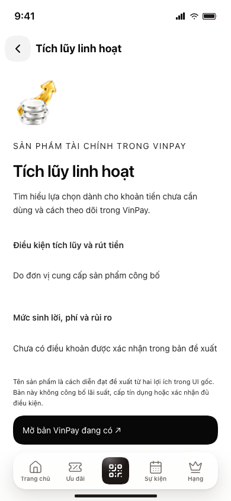
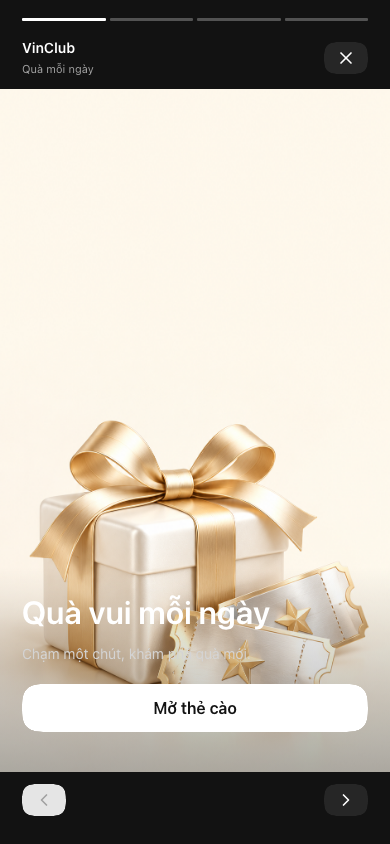

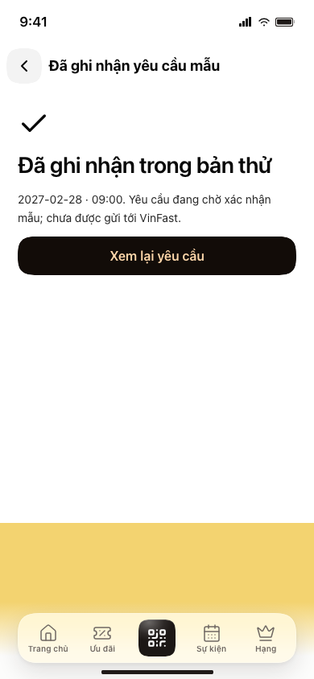
Geometry: cả sáu vùng chính ở bản chọn có x/y/width/height trùng source trong phép đo lần này. membership: y54 / h97 · wallet: y151 / h199 · financial: y276 / h140 · benefits: y484 / h168 · experiences: y652 / h430 · navigation: y762 / h62.
Flow: 15/15 check đạt: tài chính đúng vai, story bấm được, ưu đãi theo thương hiệu và tìm lại, lịch có consent và trạng thái chờ, không tràn ở360/390/430.
Pixel: đo strict bằng Stealuxe với crop rõ390×844; chưa đạt0pixel: 156,143/329,160 pixel khác ở threshold0; không resize/mask. Nhãn/hành vi thay đổi và source có shader/animation. Xem kết quả riêng thay vì dùng số ảnh để suy ra chất lượng UX.
Chưa có: human UT, lợi nhuận, ngân sách thưởng, điều khoản tài chính, phát voucher hoặc tiếp nhận lịch thật. Cuối2027 không tự gán hạn cho AI/Chat/cư dân số.
Log kiểm tra · Geometry đo mới · Pixel diff{
"recommendation": "Chốt một Home theo StackHome gốc: hội viên/điểm → ví VinPay → hai sản phẩm tài chính → ưu đãi thương hiệu và quà → trải nghiệm lifestyle ảnh lớn → điều hướng gốc. Bổ sung hành trình vào đúng lớp và màn sâu; không dùng ba Home theo scenario làm phương án cuối.",
"whyNotV5": [
"V5 đọc sai hai thẻ tài chính Sinh lời/Vay nhanh thành hai shortcut quyền lợi; làm mất vai trò bán chéo VinPay.",
"Ba composition daily/spend/experience là ba tác vụ thử, không thay thế được một Home đủ kiến trúc đã chọn.",
"Phải trả lời tính năng mới đi đâu và tạo giá trị cho ai; đặt lại nhãn và tạo thêm tab chưa giải quyết điều đó.",
"Giữ phần hữu ích của V5: trạng thái tài sản sau nhận, checkout rõ và lead chờ xác nhận; đưa xuống các luồng thay vì thay kiến trúc Home."
],
"retainedArchitecture": [
{
"layer": 1,
"name": "Hội viên và VPoint",
"purpose": "Biết hạng, điểm và quyền lợi đang có",
"entry": "Hội viên / Điểm"
},
{
"layer": 2,
"name": "Ví VinPay",
"purpose": "Xem tiền ví và mở thao tác thanh toán",
"entry": "Ví"
},
{
"layer": 3,
"name": "Hai sản phẩm tài chính",
"purpose": "Sinh lời và Vay nhanh với lợi ích cụ thể; số liệu nguồn là mẫu",
"entry": "Chi tiết từng sản phẩm VinPay"
},
{
"layer": 4,
"name": "Ưu đãi thương hiệu và rail quà",
"purpose": "Tìm ưu đãi, nhận/đổi và dùng quà; chiến dịch có thời hạn nằm tại đây",
"entry": "Ưu đãi / Voucher của tôi / sảnh chiến dịch"
},
{
"layer": 5,
"name": "Trải nghiệm lifestyle ảnh lớn",
"purpose": "Tạo hứng thú khám phá xe, điểm đến, sự kiện và O2O đúng nguồn cung",
"entry": "Chi tiết trải nghiệm / đặt vé / yêu cầu lịch"
},
{
"layer": 6,
"name": "Điều hướng gốc",
"items": [
"Trang chủ",
"Ưu đãi",
"QR",
"Sự kiện",
"Hạng"
],
"purpose": "Giữ đường vào quen thuộc; không thay bằng tab tài sản/chợ/chat"
}
],
"additions": [
{
"feature": "Hạng, quyền lợi, số dư và lịch sử VPoint",
"homeEntry": "Lớp 1: hạng + VPoint",
"destination": "Hội viên → Điểm / Quyền lợi / Tiến độ hạng",
"current": "Có bề mặt nguồn; B3 ghi hoàn thành hồ sơ hạng và sổ cái, chưa kiểm chứng production",
"feb2027": "B3 30/11/2026: lịch sử/hạn điểm, tiến độ hạng; 24/12: cấp quyền lợi và đối soát",
"end2027": "Mở rộng quyền lợi theo nguồn cung; không tự thêm tab",
"source": "SHEET B3 hiện hành, /tmp/vinclub-strategy.txt 1.2.3, 3.2.1",
"commercialValue": "Thúc đẩy sử dụng và chi tiêu chéo; VPoint không phải tiền ví hay doanh thu",
"dependency": "Luật hạng, nguồn điểm, chống trùng và đối soát"
},
{
"feature": "Ví VinPay, liên kết ngân hàng, nạp/rút và lịch sử",
"homeEntry": "Lớp 2: ví độc lập với VPoint",
"destination": "Ví VinPay → nguồn tiền / giao dịch",
"current": "Có ví và đường kích hoạt trong nguồn; B3 ghi hoàn thành liên kết ngân hàng ở ví, không đồng nghĩa SDK trên VinClub đã xong",
"feb2027": "SDK trên VinClub hạn 24/12/2026",
"end2027": "Mở rộng kết nối theo nghiệm thu, giữ lớp ví",
"source": "SHEET B3 hiện hành, /tmp/vinclub-strategy.txt 1.2.4.1, 1.2.4.4",
"commercialValue": "Nguồn tiền cho giao dịch; tiền nạp và số dư không phải doanh thu",
"dependency": "SDK, eKYC, sổ cái, trạng thái và tra soát"
},
{
"feature": "Sinh lời",
"homeEntry": "Lớp 3: thẻ tài chính Sinh lời",
"destination": "VinPay → chi tiết sản phẩm → điều kiện → đăng ký",
"current": "Source có saving; lợi suất 5,7%/năm là số mẫu. B3 ghi hoàn thành kích hoạt Sinh lời ở ví",
"feb2027": "Giữ thẻ và chuyển đúng sản phẩm khi VinPay hỗ trợ; không cam kết lãi suất hay tích hợp VinClub đã giao",
"end2027": "Tối ưu bán chéo theo dữ liệu đủ điều kiện; không tăng số thẻ mặc định",
"source": "ref-layouts.tsx PRODUCT_CASES; SHEET B3 hiện hành, /tmp/vinclub-strategy.txt 1.2.4.3",
"commercialValue": "Bán chéo sản phẩm tài chính cho VinPay; cơ chế thu và bên hưởng cần hợp đồng",
"dependency": "Chủ thể cung cấp, điều khoản, lãi suất hiện hành, rủi ro, tích hợp"
},
{
"feature": "Vay nhanh / quyền lợi tín dụng",
"homeEntry": "Lớp 3: thẻ tài chính Vay nhanh",
"destination": "VinPay → chi tiết tín dụng → kiểm tra điều kiện / đăng ký",
"current": "Source có vay với hạn mức 50 triệu mẫu; B3 hiện hành không chốt ngày phát hành tín dụng",
"feb2027": "Giữ vai trò thẻ tài chính; chỉ cho đăng ký thật khi sản phẩm và đối tác đã sẵn sàng; không hứa duyệt",
"end2027": "Mở theo sản phẩm được chốt, chưa có hạn cam kết trong B3",
"source": "ref-layouts.tsx PRODUCT_CASES",
"commercialValue": "Bán chéo tín dụng; phí giới thiệu/chia sẻ doanh thu chưa xác nhận",
"dependency": "Đối tác cấp tín dụng, điều kiện, thẩm định, consent, lãi/phí và hỗ trợ"
},
{
"feature": "QR, hóa đơn, tiện ích, QR xuyên biên giới",
"homeEntry": "Lớp 2: Mở ví; lớp 6: QR",
"destination": "Ví → Thanh toán / Hóa đơn; QR → quét và xác nhận",
"current": "Điểm vào ví/QR có nguồn; readiness mỗi dịch vụ chưa kiểm chứng",
"feb2027": "QR + hóa đơn 31/12/2026; QR xuyên biên giới 28/02/2027",
"end2027": "Mở rộng mạng chấp nhận có kiểm soát; không tạo khối tiện ích mới trên Home",
"source": "SHEET B3 hiện hành, /tmp/vinclub-strategy.txt 1.2.4.5–8",
"commercialValue": "Phí thanh toán chỉ theo hợp đồng xác nhận; TPV không phải doanh thu",
"dependency": "Mạng thanh toán, merchant, nguồn tiền, tra soát, phí và tỷ giá nếu có"
},
{
"feature": "Dùng VPoint khấu trừ tiền đơn",
"homeEntry": "Lớp 1: Điểm; lớp 4/5: món hoặc dịch vụ áp dụng",
"destination": "Chi tiết quyền lợi → đơn hàng → thanh toán",
"current": "B3 ghi Tiêu VPoint hoàn thành; cơ chế khấu trừ tích hợp đang có hạn riêng",
"feb2027": "Khấu trừ tại checkout hạn 28/02/2027; hiển thị điểm dùng được và số tiền còn lại",
"end2027": "Mở rộng từng đơn vị đủ đối soát, không gộp tiền ví với điểm",
"source": "SHEET B3 hiện hành, /tmp/vinclub-strategy.txt 1.2.2.1; 1.2.3.6",
"commercialValue": "Tăng sử dụng quyền lợi và giao dịch; trừ điểm không tự là doanh thu",
"dependency": "Luật quy đổi, quyền kết hợp voucher, hoàn/hủy và quyết toán"
},
{
"feature": "Voucher, quà đã sở hữu và quà sinh nhật",
"homeEntry": "Lớp 4: rail ưu đãi thương hiệu + quà",
"destination": "Ưu đãi → Voucher của tôi / đổi quà / nơi sử dụng",
"current": "Nguồn có rail và quà; B3 ghi ví voucher hoàn thành; quà hằng ngày vẫn là demo",
"feb2027": "Đổi quà 30/11; quà sinh nhật hội viên cao cấp 31/12/2026; quà chào mừng 24/12",
"end2027": "Duy trì theo ngân sách và nguồn cung, không buộc quà hằng ngày thành quyền lợi vĩnh viễn",
"source": "SHEET B3 hiện hành, /tmp/vinclub-strategy.txt 1.2.2.2, 1.3.1.2, 3.2.2.1, 4.4",
"commercialValue": "Tạo sử dụng tăng thêm; cần trừ chi phí tài trợ và vận hành",
"dependency": "Người chịu ngân sách, tồn, thể lệ, chống cấp trùng, xác nhận dùng"
},
{
"feature": "Vé sự kiện",
"homeEntry": "Lớp 5: card sự kiện; lớp 6: Sự kiện",
"destination": "Sự kiện → chi tiết / zone → đặt vé → vé của tôi",
"current": "Nguồn có tab Sự kiện; đặt vé thật chưa kiểm chứng",
"feb2027": "B3 hạn 31/12/2026, giai đoạn 1 theo zone; chỉ bật sự kiện có nguồn vé",
"end2027": "Mở rộng theo lịch và tồn của nhà cung cấp",
"source": "SHEET B3 hiện hành, /tmp/vinclub-strategy.txt 2.1.2.1",
"commercialValue": "Doanh thu bán vé thuộc bên cung cấp; phần nền tảng hưởng theo thỏa thuận, chưa có tỷ lệ",
"dependency": "VP-OTA/Vinpearl/VinWonders/VEC, lịch, tồn, hoàn/hủy, phát hành vé"
},
{
"feature": "Sa bàn ảo, nhà mẫu, lái thử và lịch O2O",
"homeEntry": "Lớp 5: card lifestyle ảnh lớn đúng nội dung",
"destination": "Chi tiết trải nghiệm → khám phá / 3D nhẹ → yêu cầu lịch → theo dõi",
"current": "Nguồn có VinFast và nội dung nghỉ dưỡng Đảo Ngọc; ảnh nghỉ dưỡng không chứng minh dự án nhà ở hay sa bàn đã tích hợp",
"feb2027": "Khám phá 3D, trợ lý và lịch có hạn 31/12/2026 trong B3; lịch chỉ xác nhận khi P&L phản hồi",
"end2027": "Mở rộng theo dữ liệu dự án và hiệu năng; cư dân số chưa có hạn",
"source": "SHEET B3 hiện hành, /tmp/vinclub-strategy.txt 2.2.1; ref-layouts.tsx FOR_YOU",
"commercialValue": "Lead được tiếp nhận, lịch và giao dịch P&L là các bước khác nhau; chưa xác nhận phí lead",
"dependency": "Dữ liệu 3D/giỏ hàng, consent, người nhận lead, SLA và phản hồi lịch"
},
{
"feature": "Mở Cửa Tết, nhiệm vụ và giới thiệu có chuyển đổi",
"homeEntry": "Lớp 4: card chiến dịch trong rail quà; lớp 5 chỉ khi có trải nghiệm liên quan",
"destination": "Sảnh chiến dịch → cửa → nhiệm vụ / quyền lợi → dịch vụ P&L",
"current": "Có hook quà mẫu; chiến dịch chưa được xem là triển khai",
"feb2027": "5 cửa 15/01–12/02; hoàn tất 19/02, tổng kết 26/02; referral 15/01/2027. Thứ tự có thể điều chỉnh",
"end2027": "Tái sử dụng cấu hình hạn 30/06/2027; không cố định khối Tết trên Home quanh năm",
"source": "SHEET B3 hiện hành, /tmp/vinclub-strategy.txt 1.3.2, 1.3.3",
"commercialValue": "Tăng sử dụng chéo và lượt ghé xác thực; hiệu quả sau trừ thưởng, không lấy lượt mở app làm doanh thu",
"dependency": "Thể lệ, ngân sách từng P&L, chống gian lận, nguồn cung và đối soát kết quả"
},
{
"feature": "Gói ưu đãi liên P&L, gói gia đình và đặc quyền cao cấp",
"homeEntry": "Lớp 1: quyền lợi hạng; lớp 4: gói; lớp 5: trải nghiệm đặc quyền",
"destination": "Hội viên / Ưu đãi → cấu phần gói → mua / quản lý quyền sử dụng",
"current": "B3 hồ sơ hạng hoàn thành; chưa xác nhận gói đang bán",
"feb2027": "Gói cá nhân/nhóm, quản lý quyền lợi và đối soát gói hạn 31/12/2026; đặc quyền cao cấp phụ thuộc bộ phận Đặc quyền",
"end2027": "Mở theo nguồn cung và kết quả pilot; không suy ra có phí hội viên định kỳ",
"source": "SHEET B3 hiện hành, /tmp/vinclub-strategy.txt 3.1, 3.3",
"commercialValue": "Bán chéo và phân bổ tiền gói cho P&L; cần tách nghĩa vụ cung ứng và phần nền tảng",
"dependency": "Giá so mua lẻ, hạn, công suất, quyền dùng nhóm, hỗ trợ và phân bổ doanh thu"
},
{
"feature": "Đối tác ngoài HST, affiliate và gian hàng Vincom",
"homeEntry": "Lớp 4: ưu đãi thương hiệu; lớp 5: tuyển chọn nội dung phù hợp",
"destination": "Ưu đãi → thương hiệu / gian hàng → đối tác hoặc đơn hàng",
"current": "Rail có thương hiệu mẫu; chưa chứng minh catalogue hay affiliate production",
"feb2027": "Merchant portal xác nhận dùng ưu đãi hạn 24/12/2026; marketplace/affiliate rộng chưa có hạn",
"end2027": "Mở từng đối tác sau khi khép kín attribution, xác nhận đơn và đối soát; không mặc định thêm tab Chợ",
"source": "SHEET B3 hiện hành, /tmp/vinclub-strategy.txt 2.1.3, 2.1.4",
"commercialValue": "Affiliate chỉ có hoa hồng sau giao dịch đủ điều kiện theo hợp đồng; click chuyển đi chưa tạo thu nhập",
"dependency": "Hợp tác, catalogue, tồn, portal/hóa đơn, attribution, hủy/hoàn và đối soát"
},
{
"feature": "Chat, AI shopping, OA cộng đồng và cư dân số",
"homeEntry": "Giữ trong đích sâu của trải nghiệm/dịch vụ; không thêm Home block hoặc tab ở bản chốt",
"destination": "Chi tiết trải nghiệm / dịch vụ → hỗ trợ; cộng đồng nếu tích hợp được",
"current": "Chưa có bằng chứng triển khai trong baseline",
"feb2027": "Không cam kết trước 02/2027: Duhat chưa có kế hoạch SDK; AI marketplace và cư dân số chưa có hạn",
"end2027": "Hướng mở rộng có điều kiện, chưa phải cam kết cuối 2027; pilot nhỏ khi có dữ liệu và năng lực",
"source": "SHEET B3 hiện hành, /tmp/vinclub-strategy.txt 1.1, 2.1.1, 2.2.2",
"commercialValue": "Hỗ trợ giữ chân, chuyển đổi và giảm chi phí; chưa có nguồn thu độc lập được xác nhận",
"dependency": "SDK Duhat, kiểm duyệt, catalogue đúng, kiểm thử AI, consent, dữ liệu 3D/mobile"
}
],
"moneyChapter": {
"financialVinPay": {
"role": "Ví, thanh toán, Sinh lời và tín dụng hỗ trợ giao dịch và bán chéo tài chính.",
"payerAndRecipient": "Khách hoặc đối tác chi trả theo hợp đồng từng sản phẩm; phần VinPay hưởng phải được chủ sản phẩm xác nhận.",
"recognition": "Số dư, nạp ví, TPV và hạn mức tín dụng không phải doanh thu. Lãi suất, phê duyệt và phí/chia sẻ doanh thu chưa xác nhận.",
"measure": "Tài khoản đủ điều kiện kích hoạt, giao dịch thành công, sử dụng sản phẩm và lợi nhuận đóng góp sau chi phí khi có dữ liệu."
},
"loyaltyPnL": {
"role": "Quyền lợi, vé, gói và O2O làm khách sử dụng dịch vụ P&L; đối tác ngoài có khả năng affiliate.",
"payerAndRecipient": "Khách trả tiền vé/gói/dịch vụ cho bên cung ứng; P&L/merchant tài trợ quyền lợi. Phần nền tảng chỉ tồn tại khi có thỏa thuận.",
"recognition": "Tách GMV khỏi doanh thu nền tảng; thưởng/voucher có chi phí và nghĩa vụ. Lead gửi khác lead được nhận, lịch hẹn và giao dịch.",
"measure": "Quyền lợi thực dùng, đơn được xác nhận sau hủy/hoàn, chi tiêu tăng thêm, lead được tiếp nhận và kết quả O2O."
},
"pilot": "Chọn một nhà cung cấp có đủ nguồn, giá, quyền lợi, thanh toán/tiếp nhận, hỗ trợ và đối soát; đo từ mở quyền lợi tới sử dụng hoặc lịch được xác nhận. Chưa có dữ liệu để hứa tăng conversion hay retention."
},
"philosophy": {
"product": "Khách mở Home thấy mình đang có gì, biết dùng ở đâu, rồi chọn dịch vụ theo nhu cầu. Quà nhận xong phải tìm lại và sử dụng được.",
"design": "Giữ phân cấp sáu lớp và hai thẻ tài chính. Rail dành cho lựa chọn nhanh; ảnh lớn dành cho khám phá. Điều kiện, số phải trả và trạng thái nằm tại màn quyết định.",
"business": "Tách giá trị tài chính VinPay với giá trị bán dịch vụ P&L. Chỉ gọi là doanh thu khi xác định ai trả, ai hưởng và điều kiện ghi nhận."
},
"evidenceBoundary": {
"source": "/Users/huykieu/Documents/vinpay-all/app/(vinclub)/vinclub-home/{hooks,ref-layouts}.tsx; /tmp/vinclub-strategy.txt SHEET B3 hiện hành",
"current": "Quan sát source và trạng thái tài liệu, chưa chứng minh production hay UT.",
"feb2027": "Chỉ lấy hạn ≤28/02/2027 từ B3 hiện hành, vẫn có điều kiện nghiệm thu.",
"end2027": "Tái sử dụng chiến dịch có hạn 30/06/2027; các mở rộng chưa có hạn không được gắn cam kết 31/12/2027.",
"priorError": "V5 nhầm hai sản phẩm thành hai dịch vụ; số lãi suất/hạn mức và tỷ lệ ưu đãi trong source là mẫu."
},
"slideOutline": [
{
"slide": 1,
"question": "Chốt phương án nào?",
"answer": "Một Home giữ sáu lớp của StackHome, nối tính năng mới vào hành trình sâu."
},
{
"slide": 2,
"question": "Source đã chọn điều gì?",
"answer": "Hạng/điểm, ví, hai thẻ tài chính, rail ưu đãi/quà, lifestyle ảnh lớn và năm tab gốc."
},
{
"slide": 3,
"question": "V5 sai ở đâu?",
"answer": "Thay hai sản phẩm tài chính bằng shortcut và biến ba tác vụ thử thành ba phương án Home."
},
{
"slide": 4,
"question": "Khách mở Home để làm gì?",
"answer": "Nhận diện quyền lợi và tiền đang có, dùng ưu đãi hoặc khám phá trải nghiệm theo nhu cầu."
},
{
"slide": 5,
"question": "Tính năng mới được đặt ở đâu?",
"answer": "Matrix Home entry → destination; không tự thêm khối/tab cho mỗi feature."
},
{
"slide": 6,
"question": "Luồng dùng quyền lợi kết thúc thế nào?",
"answer": "Điều kiện → tài sản → nơi dùng → checkout rõ → kết quả và tìm lại."
},
{
"slide": 7,
"question": "Trải nghiệm lớn dẫn tới hành động gì?",
"answer": "Tự khám phá → vé hoặc yêu cầu lịch → P&L tiếp nhận → theo dõi; ảnh nguồn đúng nội dung."
},
{
"slide": 8,
"question": "VinPay tạo giá trị tài chính ở đâu?",
"answer": "Ví/thanh toán/Sinh lời/tín dụng; phân biệt bán chéo với dòng tiền và doanh thu chưa xác nhận."
},
{
"slide": 9,
"question": "Loyalty đưa giá trị về P&L bằng cách nào?",
"answer": "Dùng quyền lợi, bán vé/gói, affiliate xác nhận và O2O có tiếp nhận; trừ ngân sách thưởng và chi phí."
},
{
"slide": 10,
"question": "Đến 02/2027 có thể hoàn tất những gì?",
"answer": "Các mục B3 có hạn và điều kiện nguồn cung/tích hợp; chiến dịch năm cửa có lịch mở, hoàn và tổng kết."
},
{
"slide": 11,
"question": "Cuối 2027 mở rộng theo điều kiện nào?",
"answer": "Tái dùng chiến dịch 30/06; marketplace/Chat/AI/cư dân số mở theo readiness, chưa gắn ngày cam kết."
},
{
"slide": 12,
"question": "Bằng chứng nào cho phép mở rộng?",
"answer": "Luồng chạy đúng, khách hiểu/dùng được, kết quả P&L xác nhận và kinh tế sau chi phí; UT/pilot chưa chạy phải ghi rõ."
}
]
}{
"version": "final-source-first-1",
"status": "Đề xuất cuối để review; chưa phải user approval hay human UT",
"finalRecommendation": {
"title": "Giữ StackHome nguồn, làm rõ nội dung và sửa flow tại chỗ",
"composition": [
"membership",
"wallet",
"financial-pair",
"personalized-heading",
"daily-story + brand-benefits (cùng rail)",
"experiences",
"navigation (fixed)"
],
"why": "Giữ nhịp tài sản → hai lợi ích tài chính → đề nghị thương hiệu nhỏ dễ khám phá → trải nghiệm ảnh lớn, đúng source localhost3300.",
"renderContract": "Reuse export StackHome từ ref-layouts.tsx; không dựng lại Home bằng V5 generic cards.",
"requiredOptions": {
"header": 1,
"wallet": 2,
"products": 3,
"productCount": 2,
"vouchers": 1,
"feed": 2,
"hierarchy": 1,
"story": 1,
"offerHeader": 1,
"walletState": 1,
"vinclubState": 1
},
"adaptations": [
"Nhãn Product1/2 → Tích lũy/Tín dụng, giữ lợi ích tài chính",
"Sửa hit area story nếu lỗi pointer tái hiện",
"Đích chi tiết theo offer/product id khi có flow; không báo giao dịch thật"
],
"visualSystem": "Gold shader nguồn → ví carbon → paper sáng/pastel thương hiệu → trải nghiệm ảnh lớn. Dùng token semantic và radius named khi adaptation."
},
"sourceRoot": "/Users/huykieu/Documents/vinpay-all",
"sourceUrl": "http://localhost:3300/ui-templates/sumeria/vsp?mode=light",
"evidence": "/reports/vinclub-decision-v5/ux.json",
"measurementStatus": "Bounds kế thừa phiên đo baseline trong iframe parent từ ux.json, có thể lệch khi đổi nội dung; không tuyên bố đã đo final mới.",
"reusePolicy": {
"originalcode": "Source là code của dự án; reuse StackHome cùng CSS cascade, assets, state và handlers. Không clone UI bên ngoài.",
"nonExported": "Pouch, ProductCases, OfferCards, VoucherLower, ForYou là nội bộ ref-layouts.tsx; reuse qua StackHome, chỉ tách export khi thực sự cần và giữ parity.",
"cssOrder": [
"ref-layouts.css",
"approaches.css",
"approaches-more.css",
"vinclub-home.css",
"directions.css",
"brand-colors.css",
"hierarchy.css"
],
"assets": "Giữ URL assets source; không thay bằng minh họa ngẫu nhiên."
},
"blocks": [
{
"id": "membership",
"title": "Hội viên & VPoint",
"role": "Nhận biết tôi là ai, có gì; mở tiến trình hạng.",
"sourceComponent": "StackHome → header/tag + AnimatedNumber",
"sourcePath": "app/(vinclub)/vinclub-home/ref-layouts.tsx",
"selector": ".vr-brand.vr-hello.vs-pts",
"lineRefs": [
"ref-layouts.tsx:387",
"ref-layouts.tsx:393",
"ref-layouts.tsx:395",
"hierarchy.css:69",
"hierarchy.css:75"
],
"reuse": "originalcode reuse",
"layout": {
"width": 390,
"height": "auto; chưa đo mới",
"gap": "16px theo cascade cần xác nhận",
"padding": "4px 22px 24px",
"radius": "none",
"notes": "Nền gold shader gốc; số điểm 38/46; hạng bên phải. Không dựng hero loyalty mới."
},
"content": {
"greeting": "Xin chào, Minh",
"points": 12450,
"unit": "VPoint",
"tier": "Vàng",
"tierHint": "Xem tiến trình",
"states": [
"active",
"not activated"
],
"contract": [
"memberId",
"displayName",
"tier",
"points",
"membershipState"
]
},
"interactions": [
"Chạm điểm/hạng → Hội viên; chưa kích hoạt → Kích hoạt VinClub"
],
"keepChange": "Giữ vị trí, shader, layout và ảnh hạng gốc; tên/số điểm là fixture.",
"rejectedAlternative": {
"status": "giả thuyết thiết kế; không phải quyết định bác bỏ của user",
"proposal": "Một banner hội viên lớn",
"reason": "Tăng chiều cao trạng thái tĩnh, đẩy sản phẩm và ưu đãi xuống."
},
"phaseFeb": "Dựng đủ trạng thái active/inactive với dữ liệu demo có nhãn.",
"endFuture": "Nối hồ sơ/điểm/hạng thật sau khi có API."
},
{
"id": "wallet",
"title": "Ví VinClub",
"role": "Đọc số dư, vào ví hoặc kích hoạt.",
"sourceComponent": "StackHome → Pouch + WalletInside + WalletActivation",
"sourcePath": "app/(vinclub)/vinclub-home/ref-layouts.tsx",
"selector": ".vr-pouches .vr-pouch[data-kind=\"wallet\"]",
"lineRefs": [
"ref-layouts.tsx:299",
"ref-layouts.tsx:307",
"ref-layouts.tsx:339",
"ref-layouts.tsx:399",
"ref-layouts.css:358",
"ref-layouts.css:812"
],
"reuse": "originalcode reuse",
"layout": {
"width": 346,
"height": {
"container": 199,
"cover": 237
},
"gap": 0,
"padding": "Khung x=22; chữ cấp màn hình giữ trục x=22 theo CSS gốc",
"radius": "Giữ treatment ví gốc; xác nhận computed radius",
"notes": "199 là container, KHÔNG phải chiều cao cover. Chồng lớp chủ ý với sheet; không ép toàn bộ ví về 199px.",
"measuredBounds": {
"viewportWidth": 390,
"containerHeight": 198.984375,
"coverHeight": 236.9921875,
"evidence": "vinclub-decision-v5/ux.json; đo iframe bên trong parent, chưa đo lại"
}
},
"content": {
"title": "Ví VinClub",
"balance": "28.650.000 ₫",
"cta": "Xem chi tiết",
"states": [
"active balance",
"inactive",
"new activated zero"
],
"contract": [
"walletState",
"balance",
"currency",
"openWallet",
"activationComplete"
]
},
"interactions": [
"Ví active → WalletInside iframe Home ví",
"Inactive → WalletActivation; hoàn tất → 0 ₫",
"Đóng ví về Home; giảm motion theo preference"
],
"keepChange": "Giữ carbon material, snap, số dư, animation và iframe gốc.",
"rejectedAlternative": {
"status": "giả thuyết thiết kế; không phải quyết định bác bỏ của user",
"proposal": "Thay ví bằng summary phẳng",
"reason": "Mất nhận diện vật thể và flow vào ví đã có nguồn."
},
"phaseFeb": "Reuse nguồn; kiểm tra click, back và activation demo.",
"endFuture": "Số dư/lịch sử thật chỉ khi tích hợp ví."
},
{
"id": "financial-pair",
"title": "Hai sản phẩm tài chính",
"role": "Phân biệt lợi ích tích lũy và hạn mức chi tiêu; mở chi tiết riêng.",
"sourceComponent": "VoucherLower → ProductCases(count=2)",
"sourcePath": "app/(vinclub)/vinclub-home/ref-layouts.tsx",
"selector": ".vr-vinpay-services[data-service-mode=\"cards\"]",
"lineRefs": [
"ref-layouts.tsx:228",
"ref-layouts.tsx:233",
"ref-layouts.tsx:236",
"ref-layouts.css:393",
"ref-layouts.css:804",
"ref-layouts.css:834"
],
"reuse": "originalcode reuse + adaptation nhãn/đích",
"layout": {
"width": 390,
"height": "auto theo nhãn; chưa đo mới",
"gap": 12,
"padding": "20px 22px 0; mỗi card 12px",
"radius": "rounded-14",
"notes": "Hai cột (346−12)/2=167px ở viewport390. Icon44 → tên → mô tả; không dùng column-reverse thắng cũ.",
"measuredBounds": {
"top": 275.1953125,
"evidence": "vinclub-decision-v5/ux.json; baseline, không phải final"
}
},
"content": {
"items": [
{
"name": "Tích lũy",
"benefit": "Tích lũy linh hoạt",
"type": "savings",
"rate": "Chỉ hiện khi có mức và điều kiện được duyệt"
},
{
"name": "Tín dụng",
"benefit": "Chi tiêu linh hoạt",
"type": "credit",
"limit": "Chỉ hiện hạn mức cá nhân khi đủ điều kiện"
}
],
"contract": [
"productId",
"type",
"name",
"benefit",
"eligibility",
"terms",
"detailDestination"
],
"rule": "Không thay bằng Nạp tiền/Chuyển tiền/shortcut. Không tự đặt lãi suất, hoàn tiền hay cam kết phê duyệt."
},
"interactions": [
"Chạm card mở đúng thông tin tài chính; CTA xin tư vấn/đăng ký chỉ khi có flow thật"
],
"keepChange": "Adaptation nội dung nhỏ: đổi Product1/2 thành tên tài chính; giữ hai card, icon và ngôn ngữ lợi ích.",
"rejectedAlternative": {
"status": "giả thuyết thiết kế; không phải quyết định bác bỏ của user",
"proposal": "Tăng thành grid dịch vụ chuyển tiền/nạp tiền",
"reason": "Đổi phạm vi sản phẩm tài chính thành thao tác ví, sai vai trò nguồn và brief."
},
"phaseFeb": "Hai entry tài chính; thông tin/điều kiện demo rõ.",
"endFuture": "Kết nối đối tác, eligibility, consent và trạng thái yêu cầu theo hợp đồng."
},
{
"id": "personalized-heading",
"title": "Dành cho bạn",
"role": "Đặt ngữ cảnh cho một rail chung gồm story và ưu đãi thương hiệu.",
"sourceComponent": "VoucherLower",
"sourcePath": "app/(vinclub)/vinclub-home/ref-layouts.tsx",
"selector": ".vr-offers-section-head",
"lineRefs": [
"ref-layouts.tsx:288",
"ref-layouts.tsx:291",
"ref-layouts.css:931"
],
"reuse": "originalcode reuse",
"layout": {
"width": 390,
"height": "auto",
"gap": 12,
"padding": "24px 22px 12px",
"radius": "none",
"notes": "h2 18/26; Xem tất cả cùng baseline. Không tách story thành section cao riêng."
},
"content": {
"title": "Dành cho bạn",
"action": "Xem tất cả",
"contract": [
"recommendationContext",
"offersDestination"
],
"claim": "Cá nhân hóa là mục tiêu; source hiện dùng fixture, chưa có recommender thật."
},
"interactions": [
"Xem tất cả → Ưu đãi"
],
"keepChange": "Giữ title và đường xem đủ; không nói thuật toán đã cá nhân hóa.",
"rejectedAlternative": {
"status": "giả thuyết thiết kế; không phải quyết định bác bỏ của user",
"proposal": "Đưa quà thành hero riêng trên sản phẩm",
"reason": "Tăng nhấn game và đẩy cặp tài chính khỏi nhịp nguồn."
},
"phaseFeb": "Rail fixture theo cùng nội dung nguồn.",
"endFuture": "Ranking theo hội viên/ngữ cảnh khi có dữ liệu và đo lường."
},
{
"id": "daily-story",
"title": "Quà mỗi ngày",
"role": "Entry nhỏ tạo khám phá; viewer chứa nội dung sâu.",
"sourceComponent": "HomeStory(children=GiftDeck)",
"sourcePath": "app/(vinclub)/vinclub-home/home-story.tsx",
"selector": ".vr-offer-stories .vr-home-story-frame",
"lineRefs": [
"home-story.tsx:11",
"home-story.tsx:36",
"home-story.tsx:43",
"home-story.tsx:48",
"ref-layouts.tsx:273",
"ref-layouts.css:910",
"ref-layouts.css:954"
],
"reuse": "originalcode reuse",
"layout": {
"width": 112,
"height": 160,
"gap": "12px tới offer kế",
"padding": "Frame2px; label12px/10px",
"radius": "rounded-28",
"notes": "Ảnh /vinclub-duo/stories/daily-gift-ivory-v5.png; giữ first item cùng rail.",
"measuredBounds": {
"top": 483.125,
"width": 112,
"height": 160,
"evidence": "vinclub-decision-v5/ux.json; baseline"
}
},
"content": {
"label": "Quà mỗi ngày",
"brand": "VinClub",
"steps": [
"Intro",
"Scratch",
"GreenSM",
"WinMart"
],
"contract": [
"campaignId",
"banner",
"rewardTerms",
"claimState",
"ownedRewardDestination"
],
"claim": "Source scratch là demo; không ghi đã cộng tiền/điểm thật."
},
"interactions": [
"Normal click mở viewer",
"Mũi tên/swipe/Escape/close và restore focus",
"Nhận demo phải có trạng thái và đích tìm lại"
],
"keepChange": "Giữ artwork và viewer; bắt buộc sửa hit area/stacking nếu còn bị offer cạnh chặn pointer.",
"rejectedAlternative": {
"status": "giả thuyết thiết kế; không phải quyết định bác bỏ của user",
"proposal": "Thẻ cào lớn luôn hiện trên Home",
"reason": "Chiếm màn trước khi khách có ý định; ngân sách/thưởng chưa được xác thực."
},
"phaseFeb": "Viewer và nhận quà demo rõ; không hứa reward thật.",
"endFuture": "Reward ledger, tồn kho, điều kiện, ngân sách và tìm lại quà khi được duyệt."
},
{
"id": "brand-benefits",
"title": "Rail ưu đãi thương hiệu",
"role": "Thấy thương hiệu + lợi ích + điều kiện; chọn một đề nghị.",
"sourceComponent": "OfferCards + VOUCHERS",
"sourcePath": "app/(vinclub)/vinclub-home/ref-layouts.tsx",
"selector": ".vr-offer-stories .vr-offer-story",
"lineRefs": [
"ref-layouts.tsx:29",
"ref-layouts.tsx:271",
"ref-layouts.tsx:274",
"ref-layouts.tsx:283",
"ref-layouts.css:658",
"ref-layouts.css:713",
"hierarchy.css:85",
"hierarchy.css:87"
],
"reuse": "originalcode reuse",
"layout": {
"width": 160,
"height": 160,
"gap": 12,
"padding": "Rail0 22px 8px; card14px",
"radius": "rounded-28",
"notes": "Rail chung story112 + các offer160; giữ artwork nguyên màu và pastel riêng thương hiệu. Card sau phải ló để báo có thể vuốt."
},
"content": {
"items": [
{
"brand": "Vinmec",
"lead": "Giảm đến",
"value": "20%",
"condition": "Gói khám"
},
{
"brand": "GreenSM",
"lead": "Hoàn đến",
"value": "15%",
"condition": "Mọi chuyến"
},
{
"brand": "WinMart",
"lead": "Giảm đến",
"value": "10%",
"condition": "Tối đa 100.000đ"
},
{
"brand": "Vinpearl",
"lead": "Giảm đến",
"value": "15%",
"condition": "Phòng nghỉ"
},
{
"brand": "VinWonders",
"lead": "Giảm đến",
"value": "25%",
"condition": "Vé vào cổng"
},
{
"brand": "VinBus",
"lead": "Hoàn đến",
"value": "30%",
"condition": "Vé tháng"
}
],
"contract": [
"offerId",
"brand",
"art",
"benefitType",
"maximumBenefit",
"conditions",
"eligibility",
"expiresAt",
"ownedState"
]
},
"interactions": [
"Swipe/snap ngang",
"Source dispatch vinclub:offers mở hub chung; đích offerId là adaptation đề xuất",
"Phải thấy điều kiện trước xác nhận sử dụng"
],
"keepChange": "Giữ toàn bộ 6 thương hiệu; không biến đề nghị thành voucher đã sở hữu.",
"rejectedAlternative": {
"status": "giả thuyết thiết kế; không phải quyết định bác bỏ của user",
"proposal": "Grid toàn bộ 6 offer ngay Home",
"reason": "Cho so sánh tốt hơn nhưng đẩy trải nghiệm quá sâu; archive như lựa chọn kiểm chứng, chưa là user rejection."
},
"phaseFeb": "Catalog/chi tiết demo, phân biệt khám phá và sở hữu.",
"endFuture": "Điều kiện/eligibility thật, lưu/tìm lại và xác nhận giao dịch khi đã tích hợp."
},
{
"id": "experiences",
"title": "Khám phá trải nghiệm",
"role": "Ảnh lớn giúp hình dung trước khi xem điều kiện.",
"sourceComponent": "ForYou(layout=2)",
"sourcePath": "app/(vinclub)/vinclub-home/ref-layouts.tsx",
"selector": ".vr-fy[data-feed=\"2\"]",
"lineRefs": [
"ref-layouts.tsx:120",
"ref-layouts.tsx:124",
"ref-layouts.tsx:140",
"ref-layouts.tsx:147",
"ref-layouts.css:593",
"ref-layouts.css:595",
"ref-layouts.css:837"
],
"reuse": "originalcode reuse",
"layout": {
"width": "Card calc(100% − 24px) trong rail; xác nhận theo computed",
"height": "1:1 theo chiều rộng card",
"gap": 12,
"padding": "Title24px 22px 12px; rail0 22px 16px; card text20px",
"radius": "rounded-28 + getSvgPath smoothing0.6",
"notes": "Không thay bằng card voucher nhỏ. Hai ảnh nguồn VinFast/Đảo Ngọc; CTA secondary trong ảnh.",
"measuredBounds": {
"top": 713.0859375,
"evidence": "vinclub-decision-v5/ux.json; baseline"
}
},
"content": {
"items": [
{
"title": "Lái thử VinFast",
"meta": "VinFast · Xe điện",
"image": "/vinclub-duo/foryou/vinfast-day-v1.png"
},
{
"title": "Đến với Đảo Ngọc",
"meta": "Biển xanh · Nghỉ dưỡng",
"image": "/vinclub-duo/foryou/dao-ngoc-day-v1.png"
}
],
"contract": [
"experienceId",
"title",
"image",
"place",
"availability",
"priceOrQuoteRule",
"terms",
"nextAction"
],
"rule": "Không tự bổ sung giá hay trạng thái booking."
},
"interactions": [
"Swipe ngang",
"Khám phá → BottomSheet thông tin nguồn",
"Close trở về đúng Home; gửi yêu cầu không đồng nghĩa đặt thành công"
],
"keepChange": "Giữ tỷ lệ lớn, ảnh, overlay và smooth corners nguồn.",
"rejectedAlternative": {
"status": "giả thuyết thiết kế; không phải quyết định bác bỏ của user",
"proposal": "Lưới ảnh nhỏ hai cột",
"reason": "Dễ thấy nhiều item nhưng mất vai trò hình dung và thu hẹp vùng đọc chữ/CTA."
},
"phaseFeb": "Chi tiết trải nghiệm demo có ranh giới trạng thái.",
"endFuture": "Booking/lead chỉ có khi consent, tiếp nhận và theo dõi thật."
},
{
"id": "navigation",
"title": "Điều hướng cố định",
"role": "Giữ đường tìm lại và chuyển hub ổn định.",
"sourceComponent": "VinClubHome page → nav.vk-bar + vk-indicator",
"sourcePath": "app/(vinclub)/vinclub-home/page.tsx",
"selector": "nav.vk-bar",
"lineRefs": [
"page.tsx:140",
"page.tsx:146",
"page.tsx:152",
"vinclub-home.css:62"
],
"reuse": "originalcode reuse",
"layout": {
"width": 346,
"height": 62,
"gap": "5 vị trí gồm QR giữa",
"padding": "4px; khung cách mép22px; bottom20px",
"radius": "Giữ pill navigation gốc; không dùng radius card thay thế",
"notes": "Home indicator139×5; source nav là floating FixedBottom. Không thêm primary CTA toàn Home."
},
"content": {
"tabs": [
"Trang chủ",
"Ưu đãi",
"Quét QR",
"Sự kiện",
"Hạng"
],
"contract": [
"activeTab",
"openTab",
"scanDestination",
"homeReturnState"
]
},
"interactions": [
"Tab mở đúng hub và active aria-current",
"QR nguồn chỉ có affordance; không gọi là quét đã hoạt động",
"Mọi full-screen giữ indicator"
],
"keepChange": "Reuse nav nguồn; kiểm tra QR trước khi công bố flow.",
"rejectedAlternative": {
"status": "giả thuyết thiết kế; không phải quyết định bác bỏ của user",
"proposal": "CTA đăng ký cố định thay nav",
"reason": "Home có nhiều mục tiêu, không có một cam kết duy nhất."
},
"phaseFeb": "Bốn hub demo chạy; QR ghi rõ mô phỏng nếu chưa nối.",
"endFuture": "Hoạt động/tài sản/yêu cầu tìm lại trong hub đúng loại; QR thật sau tích hợp."
}
],
"variants": [
{
"id": "baseline-final",
"name": "A · StackHome nguồn, chọn final",
"status": "recommended",
"sameContent": true,
"composition": "Hạng/điểm → ví → 2 card tài chính → story112 + 6 offer160 cùng rail → 2 trải nghiệm lớn → nav",
"options": {
"productCount": 2,
"feed": 2,
"story": 1
},
"tradeoff": "Rail cần đường Xem tất cả; đổi lại giữ trải nghiệm gần hơn vùng đầu."
},
{
"id": "increased-service-grid",
"name": "B · Grid mở rộng vùng dịch vụ",
"status": "archived alternative; chưa có user rejection",
"sameContent": true,
"composition": "Giữ cùng toàn bộ nội dung; trình bày chính 2 sản phẩm tài chính thành grid gọn có nhãn/benefit, không thêm shortcut mới. Các khối sau giữ nguyên.",
"tradeoff": "Tìm sản phẩm nhanh hơn khi khách có ý định; lợi ích/điều kiện dễ bị rút gọn quá mức.",
"hypothesis": "Chỉ mở thêm ô nếu có sản phẩm tài chính thật; không mặc định tăng số lượng dịch vụ."
},
{
"id": "big-offer",
"name": "C · Một offer lớn trước rail",
"status": "archived alternative; chưa có user rejection",
"sameContent": true,
"composition": "Giữ thứ tự khối và cùng 6 offer; offer đầu mở rộng đủ346px, story và 5 offer còn lại rail bên dưới; trải nghiệm vẫn lớn.",
"tradeoff": "Đọc điều kiện offer đầu tốt hơn nhưng thêm chiều cao, ưu ái một thương hiệu và đẩy trải nghiệm xuống.",
"hypothesis": "Chỉ chọn khi có campaign phù hợp rõ; chưa có bằng chứng conversion."
}
],
"validation": [
"So final với source tại cùng390px và cùng fixture",
"Đọc số dư/hạng, chọn phân biệt tích lũy với tín dụng",
"Normal pointer story mở không bị offer chặn; close/focus/keyboard",
"Vuốt đến thương hiệu thứ4 và mở đúng chi tiết",
"Khám phá/đóng experience, tab/back và tìm lại tài sản",
"Human UT mới kiểm chứng hiểu và tìm đường; không suy conversion từ screenshot."
]
}